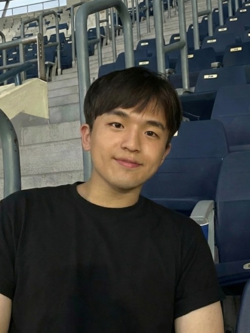
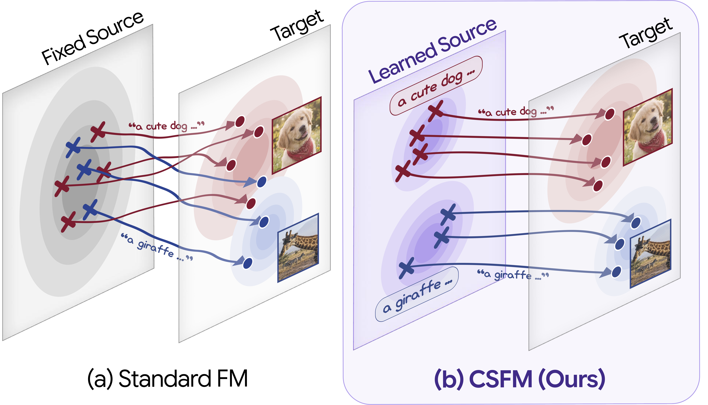
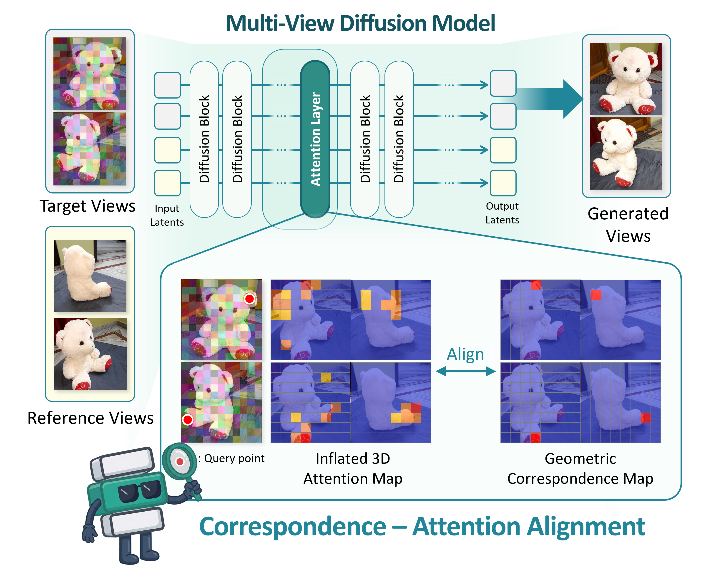
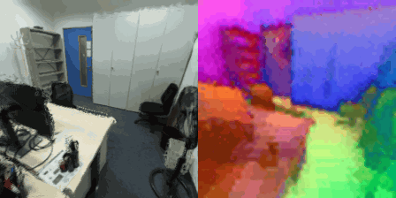
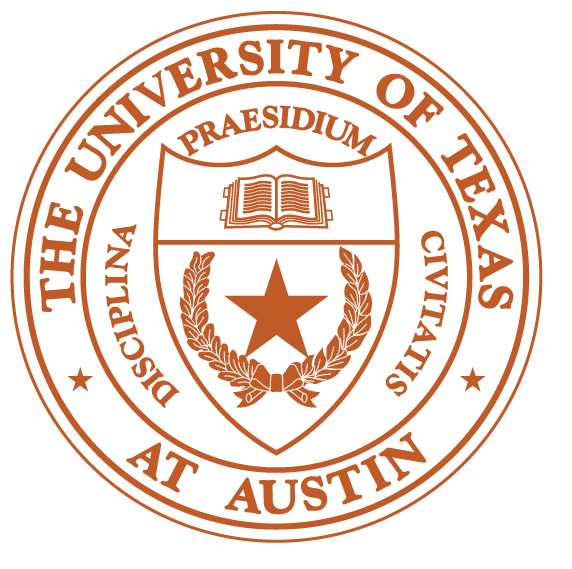

Jiho Park
I'm a 1st year MS student at KAIST AI, advised by Prof. Seungryong Kim.
How can we enable machines to understand the visual world at a human level?
I explore representation learning, generative modeling, and robot learning to find out.
Email / CV / Google Scholar

📖 Publications

Better Source, Better Flow: Learning Condition-Dependent Source Distribution
for Flow Matching
for Flow Matching
arXiv preprint (under review)


🛠️ Projects

Video-to-3D: Recurrent Feed-Forward Semantic Gaussian Splatting
Oct 2024 - Dec 2024
Oct 2024 - Dec 2024
- Fine-tuned recurrent 3D geometry models to predict semantic Gaussian Splatting.
- Implemented an open-vocab 3D segmentation pipeline.
- Grateful to have worked with Zhiwen Fan!

Coarse-to-Fine Imitation Learning with Hierarchical Action Sequence Quantization
Apr 2024 - Jun 2024
Apr 2024 - Jun 2024
- Implemented VAR (hierarchical VQ-VAE & autoregressive transformer) with
FSQ (Finite Scalar Quantization) on state-action sequence datasets.
🎓 Education

The University of Texas at Austin
Aug 2024 - Dec 2024
Exchange Student in Electrical and Computer Engineering
GPA: 4.0/4.0
Exchange Student in Electrical and Computer Engineering
GPA: 4.0/4.0